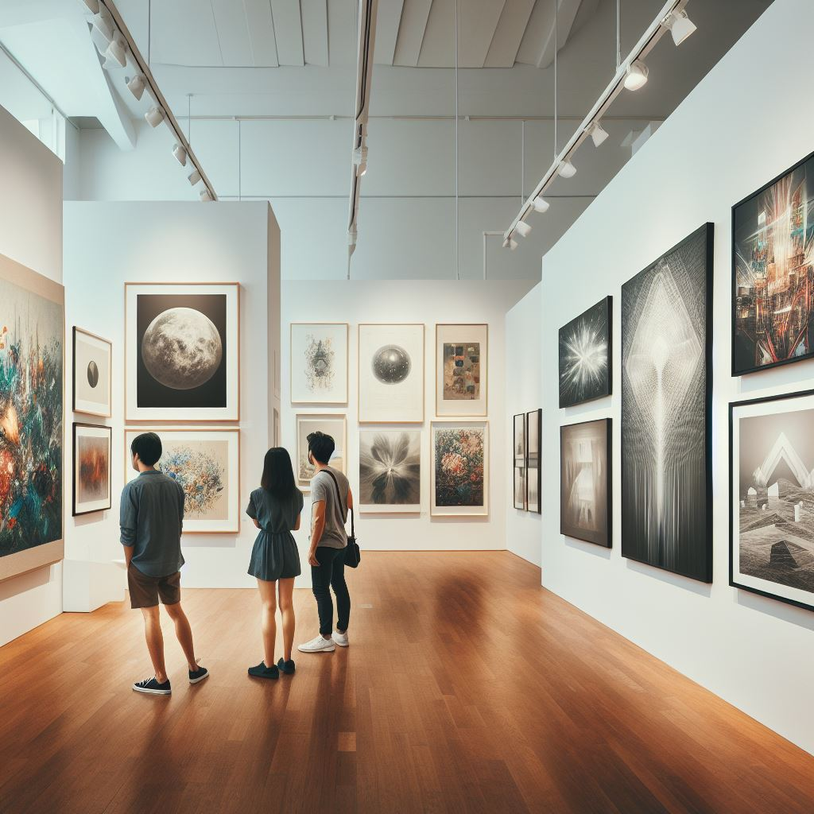
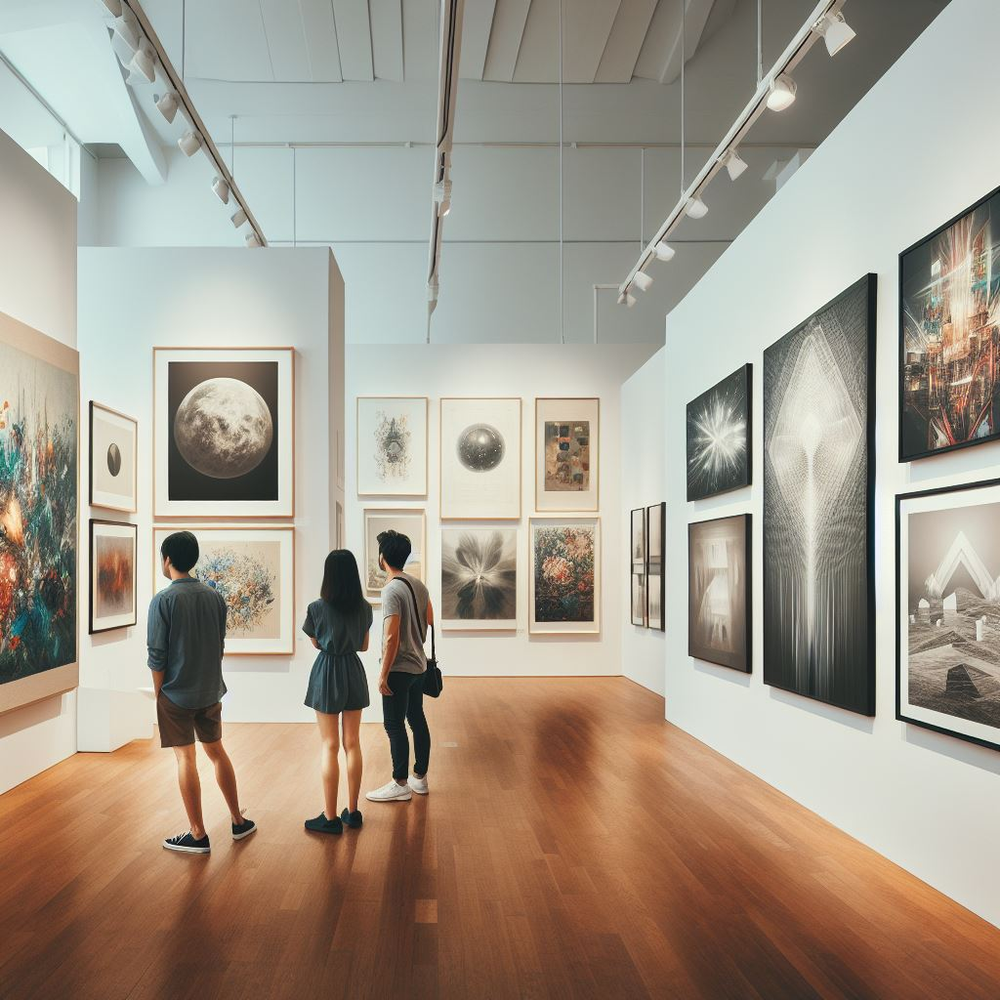

Historia
El Atelier de las Artes Visuales fue fundado en 1985 en el corazón de Río Colorado, Argentina, por un grupo de artistas apasionados que soñaban con crear un espacio donde la creatividad y la innovación pudieran florecer. Desde sus humildes comienzos en un pequeño estudio, la escuela ha crecido hasta convertirse en un... Ver Más

Eventos
Exposiciones Actuales
En la emocionante Semana de las Artes, nuestra escuela celebra la creatividad y el talento de todos nuestros estudiantes. Este evento anual transforma Ver Más

 
